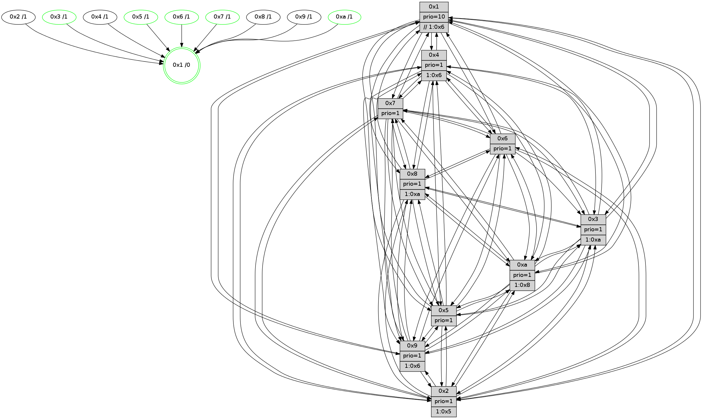

>> << IDX [start] -100 -25 -5 +0 +5 +25 +100 [1135.33719611]
 Previous packets
----------------------------------------------------------------------
1130.608408 beacon01(faad) #0 coord=01,02,03,04,05,06,07,0a,09,08 cycle=688.0ms assoc
-- color-indic=1 64 8b 56
1130.618391 beacon02(faad) #0 coord=01,02,03,04,05,06,07,0a,09,08 cycle=688.0ms assoc 64 18 67
1130.628390 beacon03(faad) #0 coord=01,02,03,04,05,06,07,0a,09,08 cycle=688.0ms assoc 64 62 2a
1130.638390 beacon04(faad) #0 coord=01,02,03,04,05,06,07,0a,09,08 cycle=688.0ms assoc 64 15 c0
1130.648390 beacon05(faad) #0 coord=01,02,03,04,05,06,07,0a,09,08 cycle=688.0ms assoc 64 6f 8d
1130.658391 beacon06(faad) #0 coord=01,02,03,04,05,06,07,0a,09,08 cycle=688.0ms assoc 64 e1 5a
1130.668392 beacon07(faad) #0 coord=01,02,03,04,05,06,07,0a,09,08 cycle=688.0ms assoc 64 9b 17
1130.678396 beacon0a(faad) #0 coord=01,02,03,04,05,06,07,0a,09,08 cycle=688.0ms assoc 64 ea 1c
1130.688399 beacon09(faad) #0 coord=01,02,03,04,05,06,07,0a,09,08 cycle=688.0ms assoc 64 64 cb
1130.698396 beacon08(faad) #0 coord=01,02,03,04,05,06,07,0a,09,08 cycle=688.0ms assoc 64 1e 86
1130.710179 [Hello(2): seq=718 sym=4,5,7,6,3,9,8,10,1 sysInfo=hasWarning stat=4:12,11,2,10/5:3,4,9,0/7:5,14,2,13/6:14,1,11,11/3:7,14,10,8/9:8,8,10,6/8:4,11,3,10/10:0,12,15,10/1:3,7,3,0]
1130.712971 [Color(10) seq=311 @0:0 prio=1 >1.@8]
1130.714489 [Hello(5): seq=722 sym=7,6,4,3,1,9,8,10,2 sysInfo=hasWarning stat=7:4,14,4,12/6:1,15,6,2/4:3,12,13,12/3:1,10,11,13/1:1,8,11,1/9:7,0,13,9/8:1,7,9,1/10:9,11,11,7/2:0,1,13,5]
1130.716907 [Hello(3): seq=722 sym=1,7,6,2,4,8,9,10,5 sysInfo=hasWarning stat=1:9,13,6,0/7:3,1,9,11/6:11,9,8,5/2:2,12,11,1/4:2,9,12,11/8:0,6,6,3/9:1,8,14,13/10:6,12,10,3/5:10,8,3,14]
1130.719456 [Hello(6): seq=722 sym=2,3,5,4,7,9,8,10,1 sysInfo=hasWarning stat=2:6,11,15,7/3:6,10,12,11/5:6,8,13,0/4:2,2,6,5/7:2,0,1,11/9:8,0,0,7/8:4,13,10,4/10:12,9,3,12/1:1,1,9,1]
1130.722069 [Hello(1): seq=631 sym=4,2,9,5,10,3,8,6,7 sysInfo=coloring-mode-on,ColoringModeRequestCalled stat=4:12,11,15,4/2:9,9,0,1/9:7,2,15,7/5:9,9,8,7/10:0,15,4,5/3:8,5,9,6/8:8,8,12,2/6:7,10,2,13/7:10,4,13,14]
1130.726074 [Color(6) seq=354 @0:0 prio=1]
1130.732151 [Color(3) seq=351 @0:0 prio=1 >1.@a]
----------------------------------------------------------------------
1131.396540 beacon01(faad) #0 coord=01,02,03,04,05,06,07,0a,09,08 cycle=688.0ms assoc
-- color-indic=1 64 37 53
1131.406522 beacon02(faad) #0 coord=01,02,03,04,05,06,07,0a,09,08 cycle=688.0ms assoc 64 a4 62
1131.416522 beacon03(faad) #0 coord=01,02,03,04,05,06,07,0a,09,08 cycle=688.0ms assoc 64 de 2f
1131.426523 beacon04(faad) #0 coord=01,02,03,04,05,06,07,0a,09,08 cycle=688.0ms assoc 64 a9 c5
1131.436522 beacon05(faad) #0 coord=01,02,03,04,05,06,07,0a,09,08 cycle=688.0ms assoc 64 d3 88
1131.446522 beacon06(faad) #0 coord=01,02,03,04,05,06,07,0a,09,08 cycle=688.0ms assoc 64 5d 5f
1131.456523 beacon07(faad) #0 coord=01,02,03,04,05,06,07,0a,09,08 cycle=688.0ms assoc 64 27 12
1131.466528 beacon0a(faad) #0 coord=01,02,03,04,05,06,07,0a,09,08 cycle=688.0ms assoc 64 56 19
1131.476527 beacon09(faad) #0 coord=01,02,03,04,05,06,07,0a,09,08 cycle=688.0ms assoc 64 d8 ce
1131.486527 beacon08(faad) #0 coord=01,02,03,04,05,06,07,0a,09,08 cycle=688.0ms assoc 64 a2 83
1131.498009 [Hello(9): seq=666 sym=2,5,3,4,7,6,8,10,1 sysInfo=hasWarning stat=2:4,6,9,7/5:13,11,9,5/3:7,11,15,15/4:7,8,2,1/7:1,0,0,0/6:4,8,5,11/8:3,11,12,3/10:6,8,0,3/1:8,7,8,1]
1131.501338 [Hello(8): seq=666 sym=5,2,3,4,9,6,10,1 sysInfo=hasWarning stat=5:6,6,2,0/2:15,2,14,9/3:8,3,2,15/4:6,15,6,10/9:7,7,4,3/6:6,1,0,13/10:6,8,7,3/1:10,2,7,0]
1131.504979 [Color(1) seq=403 @0:0 prio=10 >>1.@6,1.@7,1.@8]
1131.512035 [Hello(4): seq=722 sym=5,7,6,2,3,9,8,10,1 sysInfo= stat=5:12,12,13,14/7:1,0,0,0/6:15,14,14,12/2:0,5,6,13/3:11,9,14,11/9:7,13,2,11/8:8,0,15,5/10:5,7,6,12/1:2,8,8,1]
1131.515112 [Hello(10): seq=655 sym=6,2,3,8,7,5,9,4,1 sysInfo=hasWarning stat=6:4,0,0,6/2:5,12,2,10/3:4,7,5,11/8:12,12,7,1/7:5,8,15,6/5:14,12,12,14/9:0,15,0,2/4:4,0,0,0/1:9,11,2,1]
1131.519992 [Hello(7): seq=722 sym=2,3,5,6,4,8,9,10,1 sysInfo=hasWarning stat=2:7,12,6,0/3:9,15,5,15/5:15,0,2,1/6:7,3,3,9/4:13,13,4,1/8:5,5,11,1/9:1,1,6,1/10:9,6,7,4/1:10,4,8,0]
----------------------------------------------------------------------
1132.184672 beacon01(faad) #0 coord=01,02,03,04,05,06,07,0a,09,08 cycle=688.0ms assoc
-- color-indic=1 64 f3 5d
1132.194654 beacon02(faad) #0 coord=01,02,03,04,05,06,07,0a,09,08 cycle=688.0ms assoc 64 60 6c
1132.204655 beacon03(faad) #0 coord=01,02,03,04,05,06,07,0a,09,08 cycle=688.0ms assoc 64 1a 21
1132.214657 beacon04(faad) #0 coord=01,02,03,04,05,06,07,0a,09,08 cycle=688.0ms assoc 64 6d cb
1132.224656 beacon05(faad) #0 coord=01,02,03,04,05,06,07,0a,09,08 cycle=688.0ms assoc 64 17 86
1132.234656 beacon06(faad) #0 coord=01,02,03,04,05,06,07,0a,09,08 cycle=688.0ms assoc 64 99 51
1132.244656 beacon07(faad) #0 coord=01,02,03,04,05,06,07,0a,09,08 cycle=688.0ms assoc 64 e3 1c
1132.254661 beacon0a(faad) #0 coord=01,02,03,04,05,06,07,0a,09,08 cycle=688.0ms assoc 64 92 17
1132.264660 beacon09(faad) #0 coord=01,02,03,04,05,06,07,0a,09,08 cycle=688.0ms assoc 64 1c c0
1132.274661 beacon08(faad) #0 coord=01,02,03,04,05,06,07,0a,09,08 cycle=688.0ms assoc 64 66 8d
1132.285836 [Hello(5): seq=723 sym=7,6,4,3,1,9,8,10,2 sysInfo=hasWarning stat=7:5,14,4,12/6:2,0,6,2/4:4,12,13,12/3:2,11,11,13/1:2,9,11,1/9:8,0,13,9/8:2,7,9,1/10:10,11,11,7/2:0,1,13,5]
1132.290596 [Hello(3): seq=723 sym=1,7,2,4,8,9,10,5 sysInfo=hasWarning stat=1:9,14,6,0/7:4,1,9,11/2:3,12,11,1/4:3,9,12,11/8:1,6,6,3/9:2,8,14,13/10:7,13,10,3/5:10,8,3,14]
1132.294351 [Hello(6): seq=723 sym=2,3,5,4,7,9,8,10,1 sysInfo=hasWarning stat=2:7,11,15,7/3:6,11,12,11/5:6,8,13,0/4:3,2,6,5/7:3,0,1,11/9:9,0,0,7/8:5,13,10,4/10:13,10,3,12/1:1,2,9,1]
1132.296848 [Hello(1): seq=632 sym=4,2,9,5,10,3,8,6,7 sysInfo=coloring-mode-on,ColoringModeRequestCalled stat=4:13,11,15,4/2:9,9,0,1/9:8,2,15,7/5:9,9,8,7/10:1,15,4,5/3:8,6,9,6/8:8,8,12,2/6:7,11,2,13/7:11,4,13,14]
1132.299365 [Color(6) seq=355 @0:0 prio=1]
1132.302311 [Color(10) seq=312 @0:0 prio=1 >1.@8]
1132.303827 [Hello(2): seq=719 sym=4,5,7,6,3,9,8,10,1 sysInfo=hasWarning stat=4:13,11,2,10/5:4,4,9,0/7:6,14,2,13/6:15,2,11,11/3:7,15,10,8/9:9,8,10,6/8:5,11,3,10/10:1,13,15,10/1:4,8,3,0]
1132.307756 [STC(1) #0.172 tree-change,inconsistent-stability,stable,to-color d=0]
1132.315565 [Color(3) seq=352 @0:0 prio=1 >1.@a]
----------------------------------------------------------------------
1132.972805 beacon01(faad) #0 coord=01,02,03,04,05,06,07,0a,09,08 cycle=688.0ms assoc
-- color-indic=1 64 4f 58
1132.982786 beacon02(faad) #0 coord=01,02,03,04,05,06,07,0a,09,08 cycle=688.0ms assoc 64 dc 69
1132.992788 beacon03(faad) #0 coord=01,02,03,04,05,06,07,0a,09,08 cycle=688.0ms assoc 64 a6 24
1133.002787 beacon04(faad) #0 coord=01,02,03,04,05,06,07,0a,09,08 cycle=688.0ms assoc 64 d1 ce
1133.012788 beacon05(faad) #0 coord=01,02,03,04,05,06,07,0a,09,08 cycle=688.0ms assoc 64 ab 83
1133.022788 beacon06(faad) #0 coord=01,02,03,04,05,06,07,0a,09,08 cycle=688.0ms assoc 64 25 54
1133.032789 beacon07(faad) #0 coord=01,02,03,04,05,06,07,0a,09,08 cycle=688.0ms assoc 64 5f 19
1133.042793 beacon0a(faad) #0 coord=01,02,03,04,05,06,07,0a,09,08 cycle=688.0ms assoc 64 2e 12
1133.052792 beacon09(faad) #0 coord=01,02,03,04,05,06,07,0a,09,08 cycle=688.0ms assoc 64 a0 c5
1133.062793 beacon08(faad) #0 coord=01,02,03,04,05,06,07,0a,09,08 cycle=688.0ms assoc 64 da 88
1133.074093 [STC(5)->1 #0.172 tree-change,inconsistent-stability,stable,to-color d=1]
1133.075482 [Hello(9): seq=667 sym=2,5,3,4,7,6,8,10,1 sysInfo=hasWarning stat=2:5,6,9,7/5:14,11,9,5/3:8,12,15,15/4:8,8,2,1/7:2,0,0,0/6:5,9,5,11/8:4,11,12,3/10:7,9,0,3/1:9,8,9,1]
1133.078167 [Hello(8): seq=667 sym=5,2,3,4,9,6,7,10,1 sysInfo=hasWarning stat=5:7,6,2,0/2:0,2,14,9/3:9,4,2,15/4:7,15,6,10/9:7,7,4,3/6:7,2,0,13/7:0,0,0,0/10:7,9,7,3/1:11,3,8,0]
1133.080806 [Hello(7): seq=723 sym=2,3,5,6,4,8,9,10,1 sysInfo=hasWarning stat=2:8,12,6,0/3:10,0,5,15/5:0,0,2,1/6:8,4,3,9/4:13,13,4,1/8:5,5,11,1/9:1,1,6,1/10:9,7,7,4/1:11,4,9,0]
1133.083452 [STC(6)->1 #0.172 tree-change,inconsistent-stability,stable,to-color d=1]
1133.085289 [STC(4)->1 #0.172 tree-change,inconsistent-stability,to-color d=1]
1133.088171 [TreeStatus(5)-.->1 #0.172 tree-change,inconsistent-stability,stable child=1]
1133.089468 [STC(2)->1 #0.172 tree-change,inconsistent-stability,to-color d=1]
1133.091318 [Hello(10): seq=656 sym=6,2,3,8,7,5,9,4,1 sysInfo=hasWarning stat=6:4,0,0,6/2:6,12,2,10/3:4,8,5,11/8:12,12,7,1/7:6,8,15,6/5:15,12,12,14/9:0,15,0,2/4:4,0,0,0/1:9,11,3,1]
1133.094453 [STC(7)->1 #0.172 tree-change,inconsistent-stability,stable,to-color d=1]
1133.095685 [STC(9)->1 #0.172 tree-change,inconsistent-stability,to-color d=1]
1133.097144 [TreeStatus(7)-.->1 #0.172 tree-change,inconsistent-stability,stable child=1]
1133.099081 [Color(1) seq=404 @0:0 prio=10 >>1.@6,1.@7,1.@8]
1133.100924 [STC(10)->1 #0.172 tree-change,inconsistent-stability,stable,to-color d=1]
----------------------------------------------------------------------
1133.760935 beacon01(faad) #0 coord=01,02,03,04,05,06,07,0a,09,08 cycle=688.0ms assoc
-- color-indic=1 64 5b 36
1133.770917 beacon02(faad) #0 coord=01,02,03,04,05,06,07,0a,09,08 cycle=688.0ms assoc 64 c8 07
1133.780917 beacon03(faad) #0 coord=01,02,03,04,05,06,07,0a,09,08 cycle=688.0ms assoc 64 b2 4a
1133.790918 beacon04(faad) #0 coord=01,02,03,04,05,06,07,0a,09,08 cycle=688.0ms assoc 64 c5 a0
1133.800917 beacon05(faad) #0 coord=01,02,03,04,05,06,07,0a,09,08 cycle=688.0ms assoc 64 bf ed
1133.810917 beacon06(faad) #0 coord=01,02,03,04,05,06,07,0a,09,08 cycle=688.0ms assoc 64 31 3a
1133.820919 beacon07(faad) #0 coord=01,02,03,04,05,06,07,0a,09,08 cycle=688.0ms assoc 64 4b 77
1133.830922 beacon0a(faad) #0 coord=01,02,03,04,05,06,07,0a,09,08 cycle=688.0ms assoc 64 3a 7c
1133.840924 beacon09(faad) #0 coord=01,02,03,04,05,06,07,0a,09,08 cycle=688.0ms assoc 64 b4 ab
1133.850924 beacon08(faad) #0 coord=01,02,03,04,05,06,07,0a,09,08 cycle=688.0ms assoc 64 ce e6
1133.862786 [Hello(5): seq=724 sym=7,6,4,3,1,9,8,10,2 sysInfo=hasWarning stat=7:5,14,5,13/6:3,1,6,2/4:4,12,13,12/3:3,12,11,13/1:3,10,12,1/9:8,0,14,9/8:2,7,9,1/10:11,12,12,7/2:1,1,14,5]
1133.866161 [Hello(1): seq=633 sym=4,2,9,5,10,3,8,6,7 sysInfo=coloring-mode-on,ColoringModeRequestCalled stat=4:13,11,15,4/2:9,9,0,1/9:9,2,15,7/5:9,9,9,7/10:1,15,5,5/3:8,7,9,6/8:8,8,12,2/6:7,11,2,13/7:11,4,13,14]
1133.869804 [Color(10) seq=313 @0:0 prio=1 >1.@8]
1133.872234 [Hello(6): seq=724 sym=2,3,5,4,7,9,8,10,1 sysInfo=hasWarning stat=2:8,11,0,7/3:6,12,12,11/5:7,8,13,1/4:3,2,7,5/7:3,0,2,12/9:9,0,1,7/8:5,13,11,4/10:14,11,3,12/1:1,3,10,1]
1133.875723 [Hello(3): seq=724 sym=1,7,2,4,8,9,10,5 sysInfo=hasWarning stat=1:9,15,6,0/7:5,1,10,12/2:3,12,12,1/4:3,9,13,11/8:2,6,6,3/9:3,8,15,13/10:8,13,11,3/5:11,8,4,15]
1133.879686 [Color(3) seq=353 @0:0 prio=1 >1.@a]
----------------------------------------------------------------------
1134.549066 beacon01(faad) #0 coord=01,02,03,04,05,06,07,0a,09,08 cycle=688.0ms assoc
-- color-indic=1 64 e7 33
1134.559048 beacon02(faad) #0 coord=01,02,03,04,05,06,07,0a,09,08 cycle=688.0ms assoc 64 74 02
1134.569049 beacon03(faad) #0 coord=01,02,03,04,05,06,07,0a,09,08 cycle=688.0ms assoc 64 0e 4f
1134.579050 beacon04(faad) #0 coord=01,02,03,04,05,06,07,0a,09,08 cycle=688.0ms assoc 64 79 a5
1134.589050 beacon05(faad) #0 coord=01,02,03,04,05,06,07,0a,09,08 cycle=688.0ms assoc 64 03 e8
1134.599050 beacon06(faad) #0 coord=01,02,03,04,05,06,07,0a,09,08 cycle=688.0ms assoc 64 8d 3f
1134.609049 beacon07(faad) #0 coord=01,02,03,04,05,06,07,0a,09,08 cycle=688.0ms assoc 64 f7 72
1134.619055 beacon0a(faad) #0 coord=01,02,03,04,05,06,07,0a,09,08 cycle=688.0ms assoc 64 86 79
1134.629055 beacon09(faad) #0 coord=01,02,03,04,05,06,07,0a,09,08 cycle=688.0ms assoc 64 08 ae
1134.639054 beacon08(faad) #0 coord=01,02,03,04,05,06,07,0a,09,08 cycle=688.0ms assoc 64 72 e3
1134.650217 [Hello(4): seq=724 sym=5,7,6,2,3,9,8,10,1 sysInfo= stat=5:14,12,13,15/7:2,0,1,1/6:1,15,14,12/2:2,5,7,13/3:13,11,14,11/9:7,13,3,11/8:8,0,15,5/10:7,9,7,12/1:4,9,9,1]
1134.654171 [Color(1) seq=405 @0:0 prio=10 >>1.@6,1.@7,1.@8]
1134.657976 [Color(5) seq=318 @0:0 prio=1]
1134.659282 [Hello(8): seq=668 sym=5,2,3,4,9,6,7,10,1 sysInfo=hasWarning stat=5:8,6,2,0/2:1,2,14,9/3:10,5,2,15/4:7,15,6,10/9:7,7,4,3/6:8,2,0,13/7:0,0,0,0/10:7,10,7,3/1:12,3,8,0]
1134.663208 [Hello(7): seq=724 sym=2,3,5,6,4,8,9,10,1 sysInfo=hasWarning stat=2:8,12,6,0/3:11,1,5,15/5:1,0,3,1/6:9,5,3,9/4:13,13,4,1/8:5,5,11,1/9:1,1,7,1/10:9,8,8,4/1:12,5,9,0]
1134.667309 [Color(7) seq=270 @0:0 prio=1]
1134.670149 [Hello(9): seq=668 sym=2,5,3,4,7,6,8,10,1 sysInfo=hasWarning stat=2:6,6,9,7/5:15,11,9,5/3:9,13,15,15/4:8,8,2,1/7:2,0,0,1/6:6,9,5,11/8:4,11,13,3/10:7,10,0,3/1:10,9,9,1]
1134.675317 [Hello(10): seq=657 sym=6,2,3,8,7,5,9,4,1 sysInfo=hasWarning stat=6:5,1,0,6/2:6,12,2,10/3:5,9,5,11/8:12,12,7,1/7:6,8,15,6/5:0,12,12,14/9:0,15,0,2/4:4,0,0,0/1:9,11,3,1]